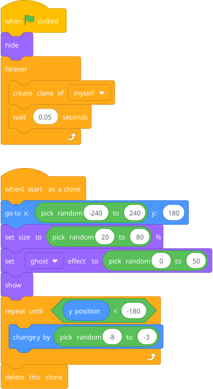
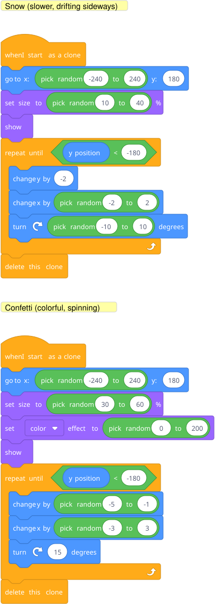

Show him: one raindrop sprite, and suddenly it's raining. Let the "whoa" moment land. Then dissect it: the original sprite is a factory. Each clone is an independent copy that runs its own script.
Prep: Draw a small raindrop sprite (or use a simple circle). That's it.

Blocks to point out: create clone of myself is under Control — it makes a copy of this sprite. when I start as a clone is a hat block, also under Control — it's the script that each clone runs when it's born. delete this clone cleans up when the raindrop reaches the bottom (without this, clones pile up and the project slows down).
The original sprite stays hidden — it's the factory. Every clone starts at a random x position at the top, with random size and transparency, and falls at a random speed. Each one is independent.
